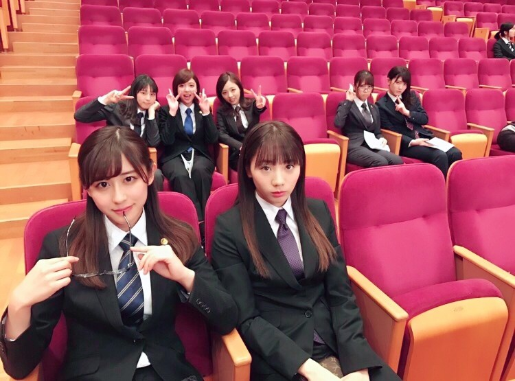
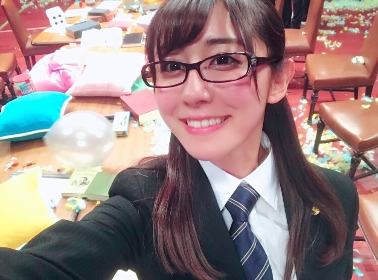
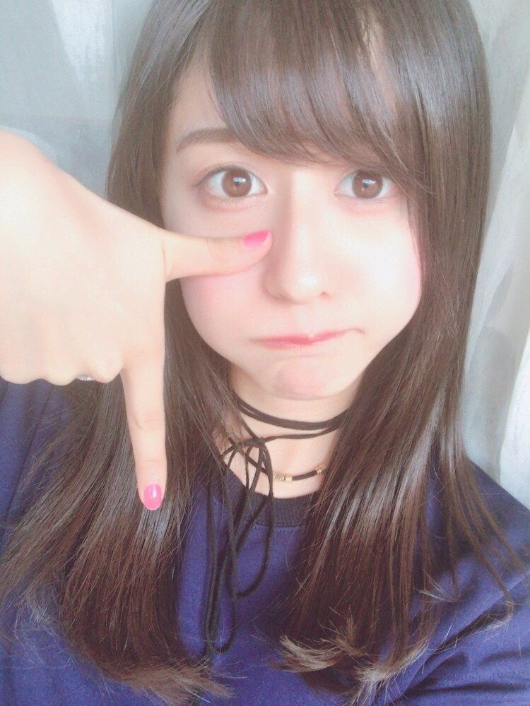

| 2017/03 19 Sun | 斎藤ちはる オフショット |
今日はミュージックの日。カメラ発明記念日の日。
3/19！ちょうどミュージックだ〜
覚えやすいですね◎
今日発明されたカメラはゲテレオタイプという
タイプで、長時間露出させるために
写真機の前で長い間じっとしていなくては
いけなかったようですが、
大変人気を誇ったようです。
今日は私が好きな、
音楽とカメラについての日ということで
どこか縁を感じます！
今日もまた「風船は生きている」の
MVのオフショットをちらり。

これはラップの部分を撮っている時の
待ち時間の私たちです〜
私は何故か物凄く格好つけているけど
隣の愛未は無だし
後ろの３人は楽しげだけど
隣の２人は何故かセクシーだし(笑)
個性的で自由な私たちの様子が
この一枚に凝縮されている...！！笑

私の1番のお気に入りシーンは
胸ぐらを掴む喧嘩の後に
クッションやら風船やら羽やらお菓子やらを
ひたすら投げまくるこのラストのシーン。
お菓子を投げたり食べさせあったり
枕をポンポン投げたり
日常生活じゃなかなか出来ない事ができて
ストレスか発散出来た気がする！！
ということでこの笑顔です。笑
ちなみに完成されたMVのラストの方で
私が投げているお菓子はマシュマロです◎
かりんと食べさせあってるのも！
大きくて甘くて美味しい
アメリカンなマシュマロでした！
こういう公民館やホールの椅子って
なんでこんなにフカフカなんだろうって
くらいに座り心地が良いよね◎
木×臙脂色の椅子がおしゃれ！
------------------------------------------------♡
♬ ChihaMusic
「奏」スキマスイッチさん
出会いと別れのこの春になるにつれて
この曲が聞きたくなってくる。
なんて優しい声なんだろう。
温かみがあって切なくて。
一度聞いたらずっと聞いていたくなる。
"君が大人になってくこの季節が
悲しい歌で溢れないように"
っていう歌詞にグッとくる。
口ずさみたくなる。
スキマスイッチさんの曲好きだな〜◎

少し前に言っていた、
TWICEさんの「TT」ポーズ！
泣いている絵文字の(T_T)このTを
手で表して泣いているのを表現していて
このポーズがめちゃくちゃ可愛い！
TWICEさんみんな可愛いから
真似したくなっちゃうんです☺︎
こんな風なキャッチーなポーズって
素敵だよね！
おやすみ
斎藤ちはる